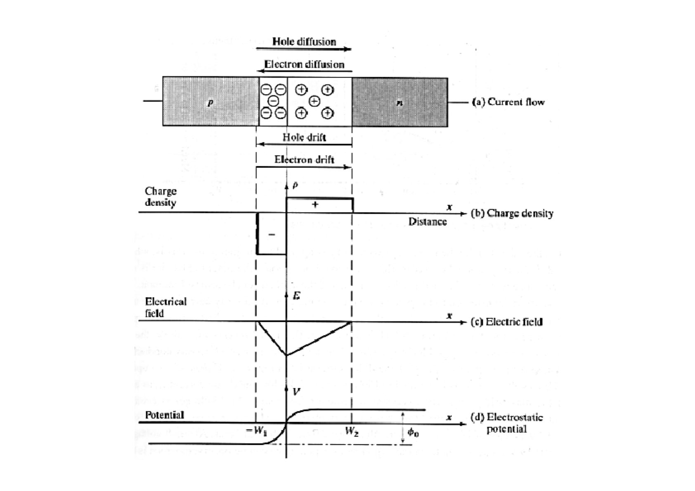
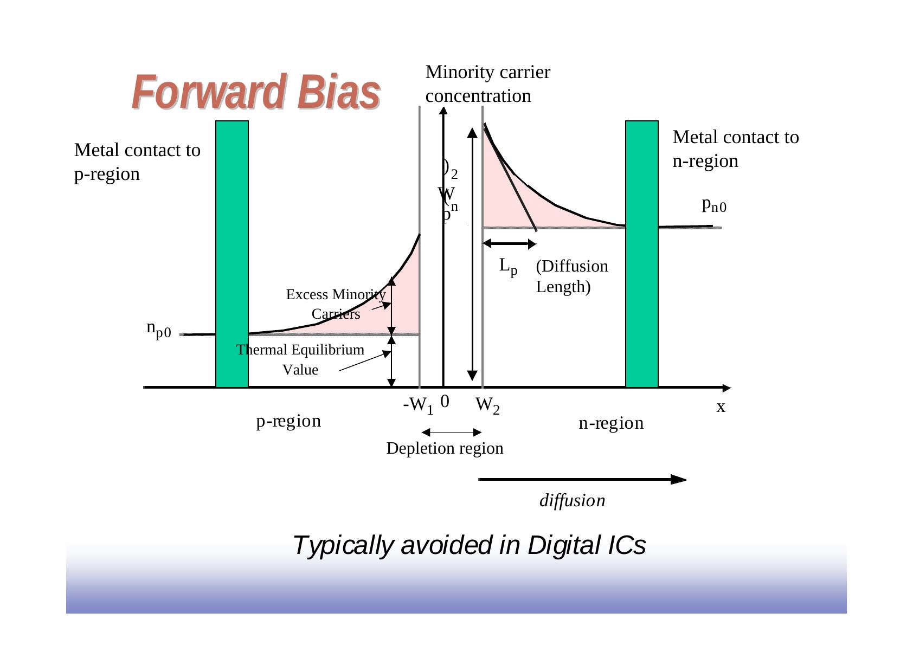
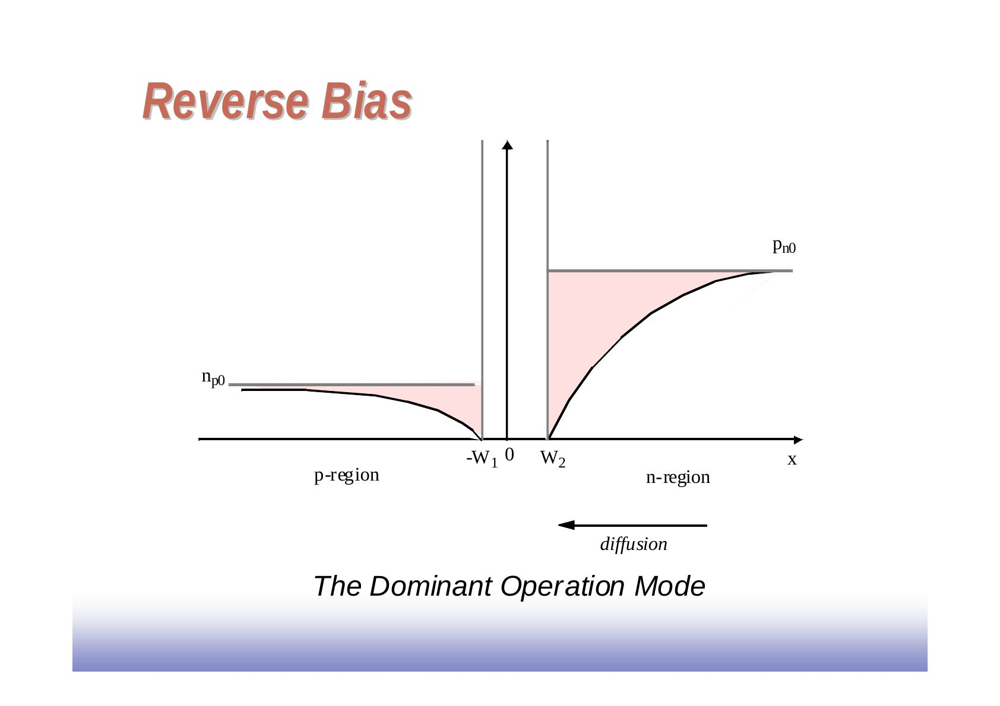
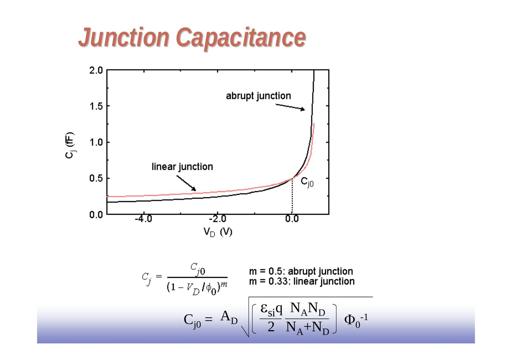
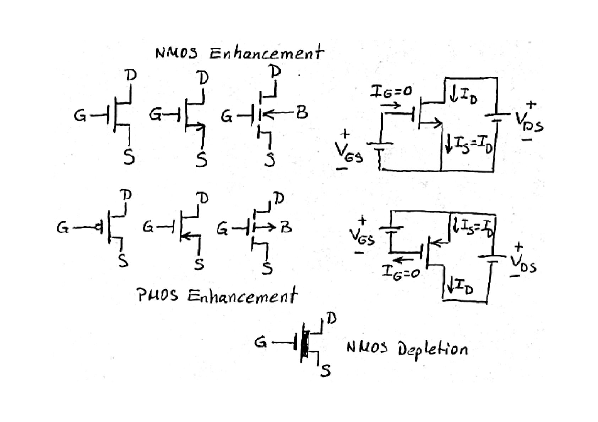
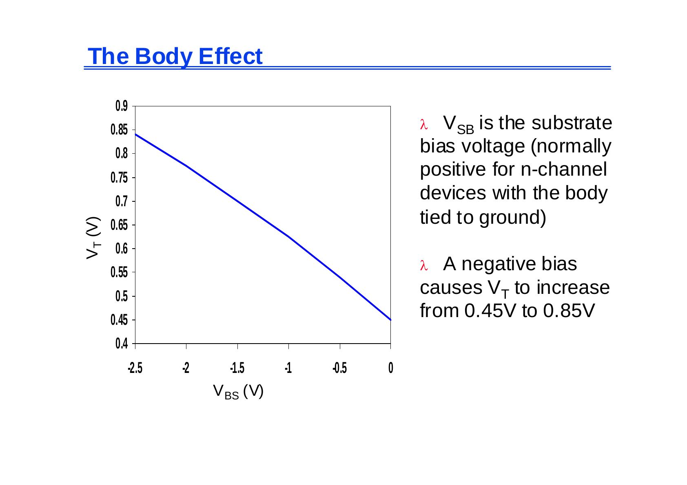
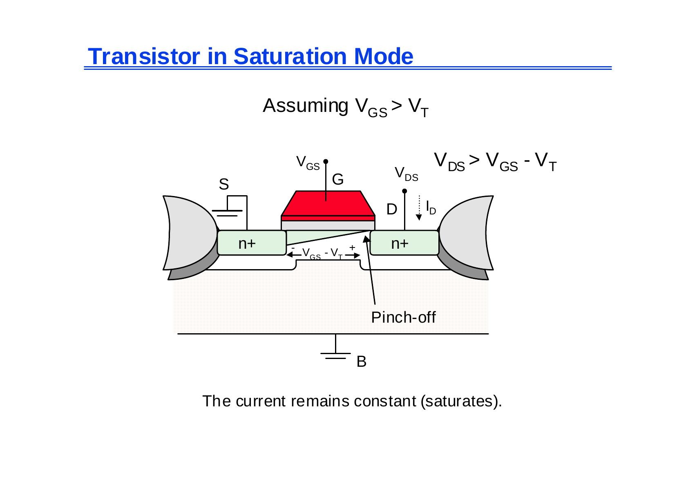

· EEM312
EEM312 Sayısal Elektronik: Diyot ve MOS Transistöre Giriş (UC Berkeley EE141 slaytları, Jan Rabaey)
EEM312 – Sayısal Elektronik · 06.03.2006 · 16.10.2026
Bu yazı, Başkent Üniversitesi EEM312 Sayısal Elektronik dersinde Prof. Dr. Emin Akata'nın 2006 bahar döneminde dağıttığı "The Diode" başlıklı 37 sayfalık sunumu aktarıyor. Sunum büyük ölçüde Jan M. Rabaey'in UC Berkeley EE141 (Digital Integrated Circuits) ders slaytlarına dayanıyor; hocanın el yazısı ve formül türetmeleri ile başka ders kitaplarından alınmış birkaç şekil eklenmiş. Slaytlar İngilizce; içerik aşağıda Türkçe açıklamalarla ve formülleriyle yazıya döküldü. Orijinal PDF yazının sonunda indirilebilir. Aynı serinin devamı: MOS Transistör.
Bu içerik üçüncü taraf bir kaynağa aittir; arşiv ve nostalji amacıyla kaynak belirtilerek paylaşılmıştır. Hak sahibinin talebi hâlinde kaldırılır.
Diyot
Bir IC sürecinde p-n eklemi, n alttaş içinde p bölgesi ve üzerinde alüminyum kontaklarla oluşur (A: anot, B: katot). Sayısal tümdevrelerde diyot çoğunlukla parazitik bir eleman olarak bulunur (ör. MOS transistörlerin source/drain–alttaş eklemleri).

İleri ve ters kutuplama
- İleri kutuplama: azınlık taşıyıcıları eklemin iki yanına enjekte edilir; fazla azınlık taşıyıcıları difüzyon uzunluğu (L_p) boyunca azalarak denge değerine (n_p0, p_n0) döner. Sayısal IC'lerde genellikle kaçınılan çalışma biçimidir.
- Ters kutuplama: azınlık taşıyıcı yoğunlukları eklem kenarında denge değerinin altına düşer; sayısal IC'lerde baskın çalışma biçimidir.


Diyot akımı
- I_D = I_S (e^(V_D/Φ_T) − 1)
- Yerleşik (built-in) potansiyel: Φ₀ = Φ_T ln(N_A N_D / n_i²)
- Isıl gerilim: Φ_T = kT/q = 26 mV (300 K)
- N_A alıcı, N_D verici yoğunluğu; n_i ≅ 1,5 × 10¹⁰ cm⁻³ (silisyum, 300 K); k = 1,38 × 10⁻²³ J/K; T = 273 + °C; q = 1,6 × 10⁻¹⁹ C
Notlar:
- I_S doyma akımıdır ve diyotun kesit alanıyla doğru orantılıdır.
- I_S sıcaklığa çok bağlıdır; yaklaşık her 5 °C artışta iki katına çıkar.
- Gerçek aygıtlarda ters akım I_S'den yaklaşık 3 kat büyüktür; bunun nedeni boşaltılmış bölgede ısıl olarak üretilen ve elektrik alanla süpürülen elektron-hole çiftleridir. Ters akım her 10 °C'de iki katına çıkar.
- Tipik silisyum eklemlerde I_S, 10⁻¹⁷ A/µm² mertebesindedir.
- Φ₀'a eşik (cut-in) gerilimi de denir (0,6–0,8 V).
Diyot akımı doğrusal ölçekte V_D ≈ 0,7 V'tan sonra hızla artar; logaritmik ölçekte ileri yönde akım 2,3Φ_T V/dekad eğimle artar.
El analizi modelleri: (a) ideal diyot modeli I_D = I_S(e^(V_D/Φ_T) − 1); (b) birinci derece model: diyot, iletimdeyken V_Don değerinde bir gerilim kaynağı. Sunumda bir ders kitabından alınmış örnekte V_S = 3 V, R_S = 10 kΩ ve I_S = 0,5 × 10⁻¹⁶ A olan basit diyot devresinde V_S − R_S I_D = V_D denkleminin sayısal çözümü I_D = 0,224 mA, V_D = 0,757 V; V_Don = 0,7 V'luk basit model ise V_D = 0,7 V, I_D = 0,23 mA veriyor. Bu yüzden ilk yaklaşım çözümünde basit model kullanmak mantıklıdır.
Boşaltılmış bölge (depletion region)
Yük: Boşaltılmış bölgenin iki yanındaki uzay yükü eşittir:
- −qW₁N_A A_D = qW₂N_D A_D ⇒ W₁ = −W₂ N_D/N_A … (1)
- Bölge genişliği W_j = W₂ − W₁ ⇒ W₂ = W_j + W₁ … (2)
- (1) ve (2)'den W₂ = W_j / (1 + N_D/N_A) … (3) (W₁ negatiftir)
- Q_j = Q_N = qW₂N_D A_D … (4) ⇒ Q_j = q [N_A N_D/(N_A + N_D)] A_D W_j … (5)
- Aygıt fiziğinden W_j = √[(2ε_si/q)((N_A + N_D)/(N_A N_D))(Φ₀ − V_D)] … (6)
- (6), (5)'e konunca: Q_j = A_D √[2ε_si q (N_A N_D/(N_A + N_D)) (Φ₀ − V_D)]
Ters kutuplamada V_D negatiftir.
En büyük elektrik alan: Gauss yasasından E = q/(ε₀A); buradan
- E_j = √[(2q/ε_si)(N_A N_D/(N_A + N_D))(Φ₀ − V_D)]
Eklem sığası
Uzay yükü bölgesinde serbest taşıyıcı çok az olduğundan bölge ε_si dielektrik sabitli bir yalıtkan gibi, n ve p bölgeleri de kondansatör levhaları gibi davranır. C_j = dQ_j/dV_D türevi alınıp düzenlenirse:
- C_j = A_D √[(ε_si q/2)(N_A N_D/(N_A + N_D))(Φ₀ − V_D)⁻¹]
- Sıfır kutuplamada (V_D = 0): C_j0 = A_D √[(ε_si q/2)(N_A N_D/(N_A + N_D)) Φ₀⁻¹]
- C_j = C_j0 / √(1 − V_D/Φ₀), genel olarak C_j = C_j0/(1 − V_D/Φ₀)^m; m = 0,5 ani (abrupt), m = 0,33 doğrusal eklem

Difüzyon sığası
Diyotun dinamik davranışı, uzay yükü ve fazla azınlık taşıyıcılarının yük depolama etkilerini birleştiren doğrusal olmayan C_D sığasıyla modellenir:
- Depolanan fazla azınlık taşıyıcı yükü Q = τ_T I_D = τ_T I_S(e^(V_D/nΦ_T) − 1) ≅ τ_T I_S e^(V_D/nΦ_T) (I_D ≫ I_S için); n çoğu diyotta 1 olan yayınım katsayısı, τ_T ortalama geçiş süresidir.
- C_d = dQ/dV_D; C_D = C_j + C_d = C_j0/(1 − V_D/Φ₀)^m + (τ_T I_S/Φ_T) e^(V_D/nΦ_T)
- C_d yalnız ileri kutuplamada önemlidir; sayısal tümdevrelerde bu durum söz konusu değildir.
Büyük işaret eşdeğer sığası
Eklem sığası gerilime bağlıdır; sayısal devrelerde gerilim V_high–V_low aralığında hızla değiştiği için doğrusal olmayan C_j yerine eşdeğer doğrusal bir C_eq kullanmak daha uygundur:
- C_eq = ΔQ_j/ΔV_D = [Q_j(high) − Q_j(low)] / (V_high − V_low) = K_eq C_j0
- K_eq = [−Φ₀^m / ((V_high − V_low)(1 − m))] [(Φ₀ − V_high)^(1−m) − (Φ₀ − V_low)^(1−m)]
Diyot modeli: seri direnç R_S, akım kaynağı I_D ve paralel C_D. İkincil etkiler: yaklaşık −20 V'ta çığ kırılması (avalanche breakdown).
MOS transistöre giriş
Transistör bir anahtardır: V_GS ≥ V_T iken source ile drain arasında R_on dirençli bir anahtar gibi davranır. MOS transistör; polisilisyum gate, ince gate oksidi, n+ source/drain bölgeleri, alan oksidi (field oxide) ve p tipi alttaştan oluşur.

Eşik gerilimi
Güçlü evirtimin (strong inversion) oluştuğu V_GS değerine eşik gerilimi V_T denir.
- Boşaltılmış bölge genişliği W_d = √(2ε_si φ/(qN_A)), yükü Q_d = √(2qN_A ε_si φ); φ, oksit-silisyum sınırındaki potansiyel, N_A alttaş katkısıdır.
- Evirtim katmanı varken boşaltılmış bölge yükü sabittir: Q_B0 = √(2qN_A ε_si |2φ_F|).
- Alttaş kutuplaması V_SB uygulanırsa güçlü evirtim için gereken yüzey potansiyeli artar: Q_B = √(2qN_A ε_si (|−2φ_F| + V_SB)).
V_T = V_T0 + γ(√|−2φ_F + V_SB| − √|−2φ_F|)
- V_T0: V_SB = 0'daki eşik gerilimi; çoğunlukla üretim sürecine bağlıdır (gate ile alttaş arasındaki iş fonksiyonu farkı, oksit kalınlığı, Fermi gerilimi, yüzeyde tutulan yabancı yükler, iyon ekme dozu vb.).
- V_SB: source-bulk gerilimi.
- φ_F = −φ_T ln(N_A/n_i): Fermi potansiyeli (~ −0,3 V).
- γ = √(2qε_si N_A)/C_ox: body-effect katsayısı; ε_si = 1,053 × 10⁻¹⁰ F/m, C_ox = ε_ox/t_ox, ε_ox = 3,5 × 10⁻¹¹ F/m.

V_SB, gövdesi toprağa bağlı n kanallı aygıtlarda normalde pozitiftir; negatif V_BS, V_T'yi 0,45 V'tan 0,85 V'a yükseltir.
Doğrusal ve doyum bölgeleri
- Doğrusal bölge (V_GS > V_T, V_DS < V_GS − V_T): akım hem V_GS hem V_DS'nin doğrusal fonksiyonudur (küçük V_DS'de).
- Doyum bölgesi (V_DS > V_GS − V_T): kanal drain ucunda kısılır (pinch-off) ve akım sabit kalır (doyar).

Doğrusal bölge akımının türetilmesi
- Kanalın dx'lik parçasındaki yük: dq(x) = −C_ox W dx [V_GS − v(x) − V_T]; birim alan başına yük Q_i(x) = −C_ox[V_GS − v(x) − V_T], C_ox = ε_ox/t_ox.
- x noktasındaki alan E(x) = −dv(x)/dx elektronları µ_n dv(x)/dx hızıyla drain'e sürükler; i = (dx/dt)(dq/dx) = µ_n (dv(x)/dx)(dq(x)/dx).
- Yerine koyunca I_D = −i = µ_n C_ox W [V_GS − v(x) − V_T] dv(x)/dx; iki taraf 0'dan L'ye ve 0'dan V_DS'ye integre edilir.
- I_D = (µ_n C_ox)(W/L)[(V_GS − V_T)V_DS − V_DS²/2]
Burada µ_n C_ox = k′_n süreç geçiş iletkenliği parametresi, k_n = k′_n W/L kazanç çarpanı, W/L en-boy oranıdır.
Not: Sunumda bazı sayfalar (ör. diyot devresi örneği, MOSFET'in üç boyutlu yapısı ve kesiti, i_D–v_DS eğrileri) basılı ders kitaplarından taranmış şekillerdir; bunlar yazıya görsel olarak alınmadı, yalnız içerikleri özetlendi.